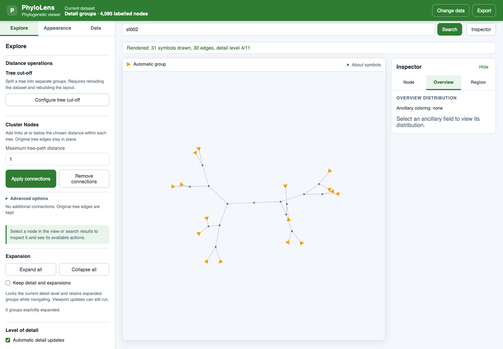
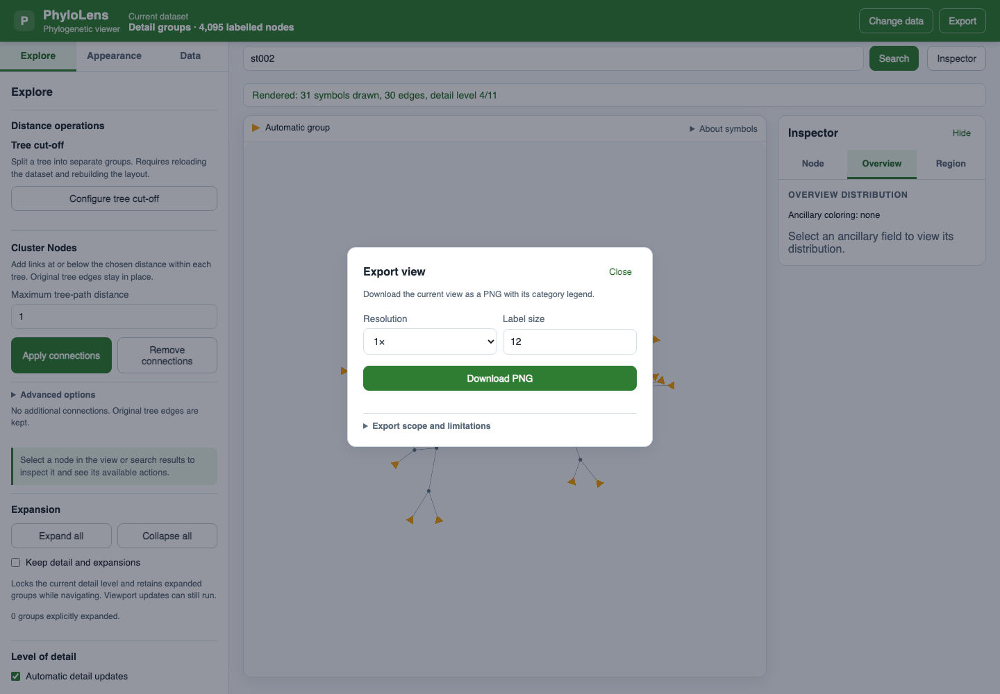

Display and navigation
After loading data, the central view shows the prepared tree or forest. The surrounding controls allow you to select nodes, change the display and inspect observations.
Move, zoom and select
Drag the background to pan and use the mouse wheel to zoom. Select an ordinary node to inspect its identifier and observations. Use the search controls to find an identifier or ancillary value, including records outside the current view.
Typing search also matches original isolate identifiers. Several matching isolates in one profile produce one profile result. Focusing a result centres the view on its node.

Levels of detail
Large trees are displayed using detail groups. Zoom in to show finer detail. A triangular group represents several connected nodes; it is not an individual isolate.

Use Expand selected branch or group, Expand all and Collapse all to control detail. Branch folding follows the current technical root. A request can show only part of a group when the display budget is reached; it does not mean that the remaining observations have been removed.
Forest components
Use the component tabs to view one tree or return to the overview. Newick components use Group labels. Typing components use local CC labels; these numbers are not clonal-complex assignments from a reference database.

Export a figure
Open Export view, choose the resolution and label size, and download the PNG. The image can include a legend and explanations of aggregate symbols.

The export contains the current camera and visible detail, including folded branches and distance overlays. Expand the required groups before export if the figure should show individual nodes.